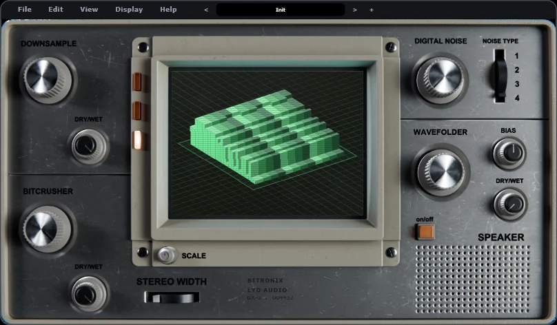
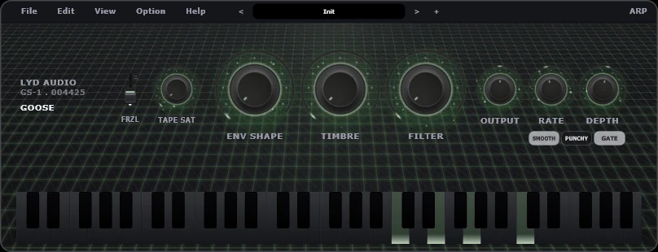
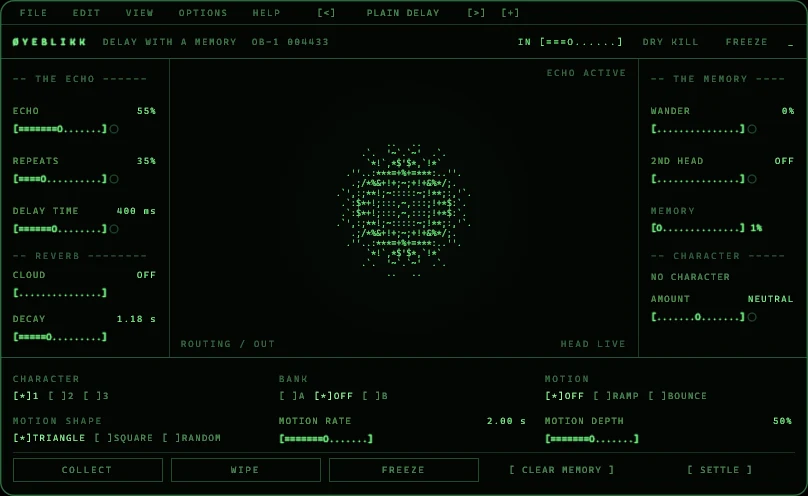
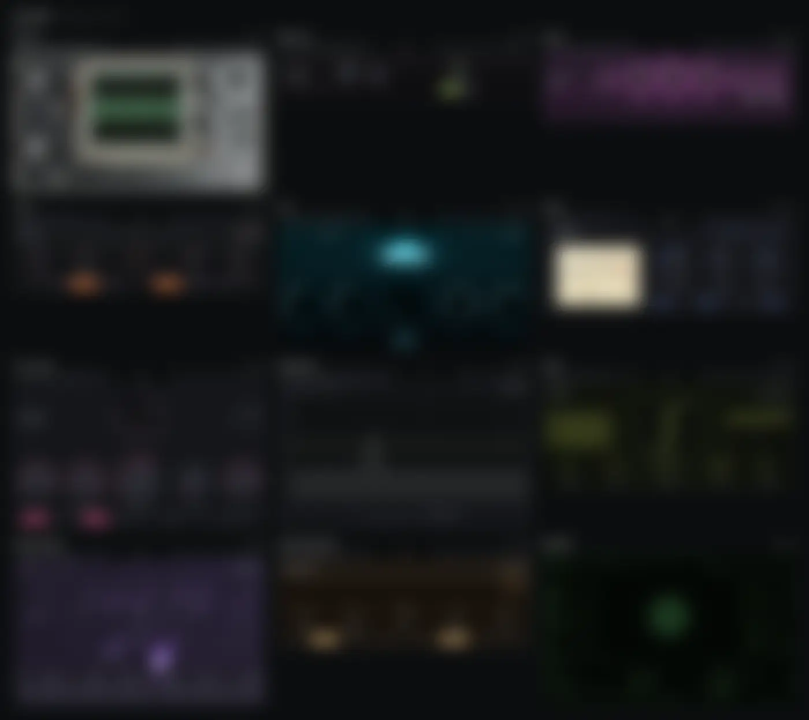
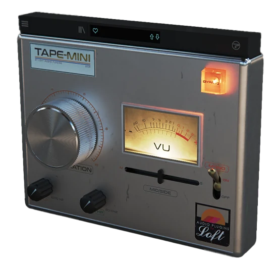
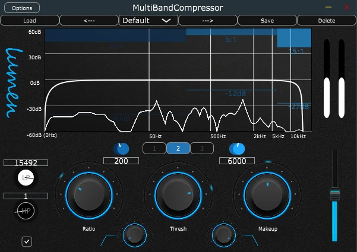
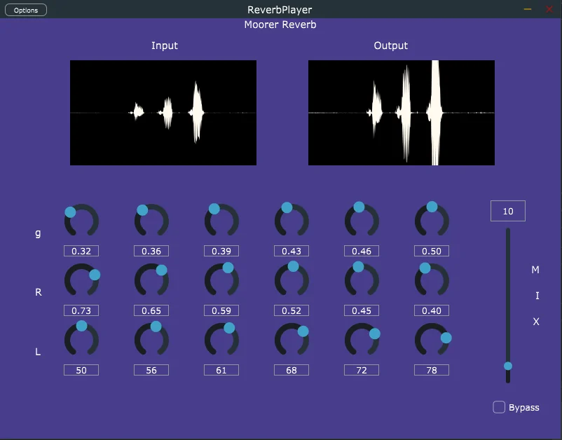

Plug-ins & DSP
Audio plug-ins
Real-time audio in C++ and JUCE, from a plug-in company of my own back to the student projects where it started.
Now · lyd audio
lyd audio
My plug-in company: plug-ins that show their work. Each one has a drawn panel that shows what the DSP is doing, and every claim about the sound is backed by a measurement. Windows VST3 and standalone, with no license key, no activation and no account.

BX-1 · destroyer
Bitronix
Break a signal four ways and watch it happen: bit crush, downsample, wavefold and noise, on a CRT scope.
lydaudio.com →
GS-1 · synth
Goose
Sixteen voices. One row of knobs.
lydaudio.com →
OB-1 · delay
Øyeblikk
A delay that keeps three minutes of what you played, and lets you scan back through it.
lydaudio.com →

Previously
Loft Audio Plugins
I was the audio plug-in developer at Loft, a small company making effects “for artists, by artists, with artists”: tools shaped by real studio use and built together with the producers who use them.
I developed its flagship, TAPE-MINI, from the DSP to the finished, shipping plug-in. It's a miniature tape saturator built to add warmth and punch to drums, with high- and low-pass filters, auto gain, a mid/side fader and oversampling, and it ships as VST3 and AU for macOS and Windows.
Earlier work
Where it started

3-band dynamic compressor
- Compression on three bands with variable crossover frequencies
- Low-pass and high-pass filters
- Real-time spectrogram with EQ curves
- Preset manager

Moorer reverb
- Real-time reverb processing
- Responsive parameters with mix control
- Audio bypass
- Input and output waveform monitoring
Try it
Web-based synthesizer
Four oscillators through an ADSR envelope and a feedback delay, built on the Web Audio API.
Click or tap the keys, or play from your keyboard: A W S E D F T G Y H U J and up.